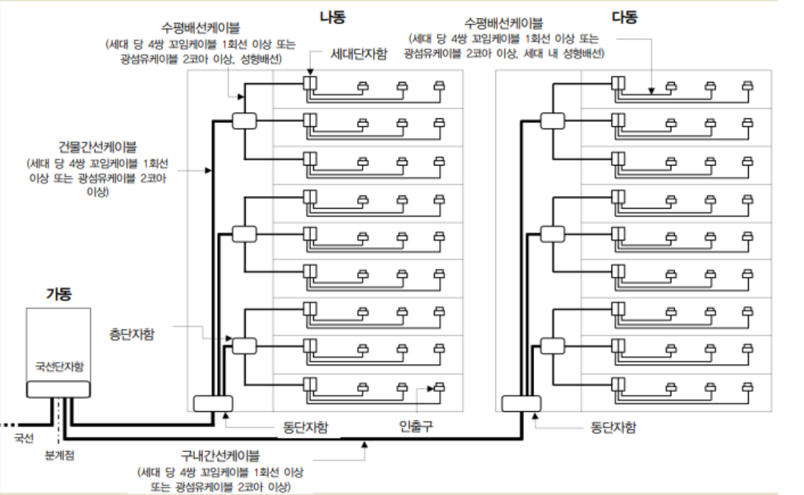
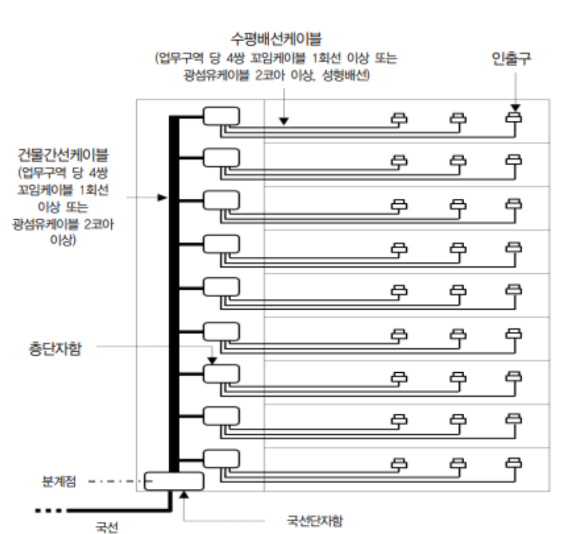

2. 두 개 이상의 공동주택인 경우

공동주택 구내배선도 예시주) 국선단자함과 동단자함이 광다중화 기능을 갖는 경우, 구내간선케이블은 광섬유케이블 8코어 이상. 동단자함에서 세대단자함 또는 인출구까지의 건물간선케이블 및 수평배선케이블은 단위세대당 1회선(4쌍 꼬임케이블 기준) 이상 또는 광섬유케이블 2코어 이상으로 설치할 수 있다.[별표 12] (제33조제2항 관련)
업무용 및 기타건축물의 구내배선 표준도
1. 한 개의 건축물인 경우

업무용 및 기타건축물 구내배선도 예시134